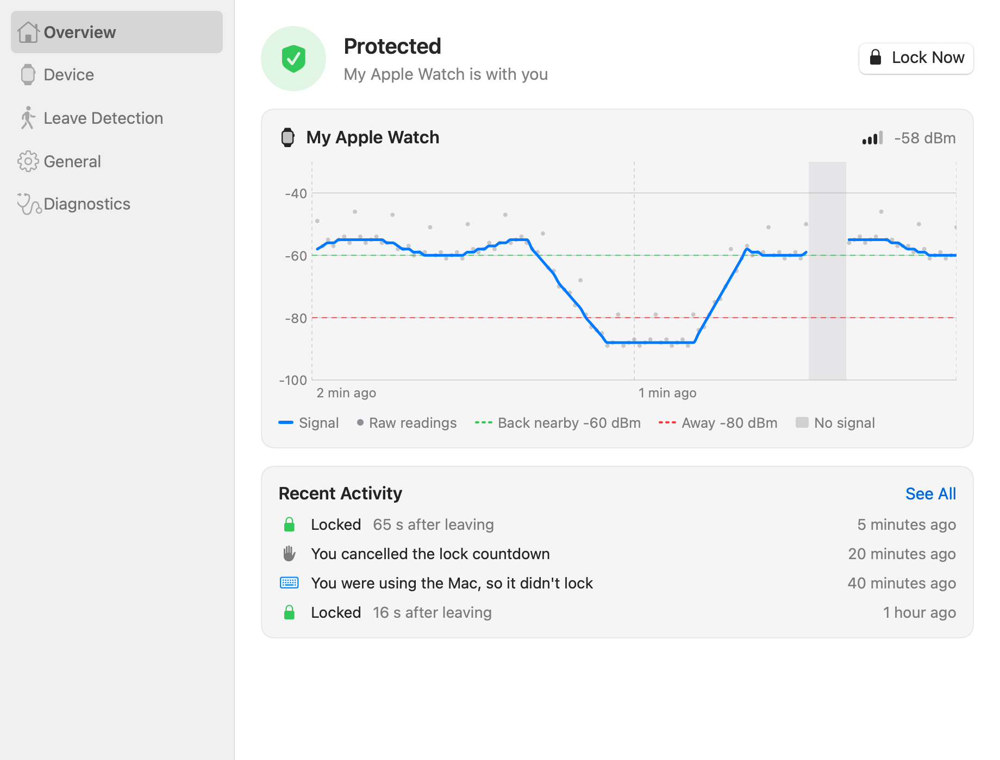
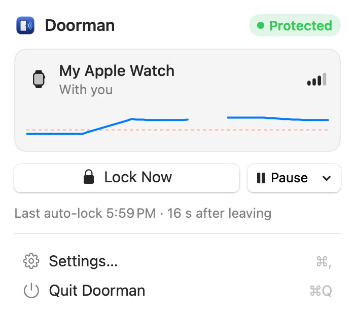
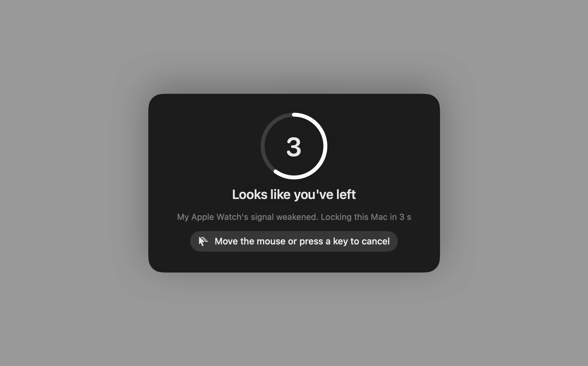
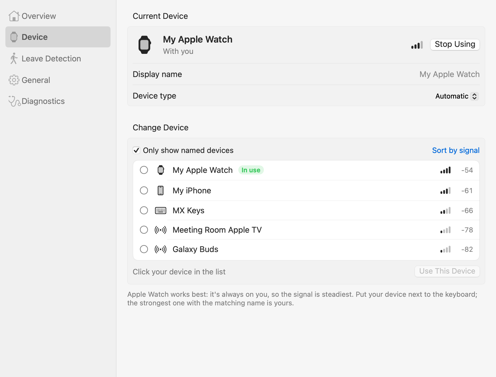
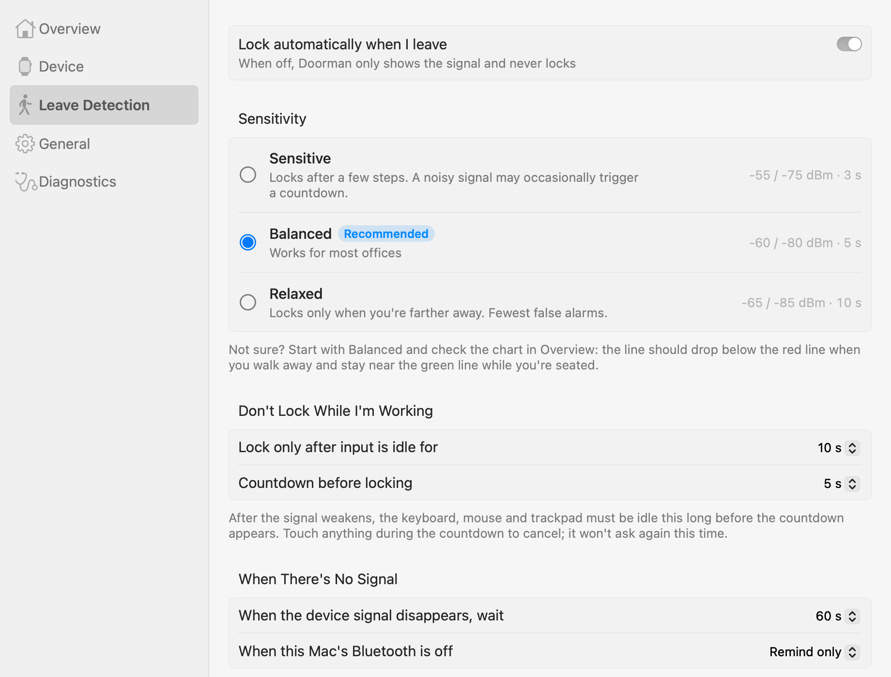
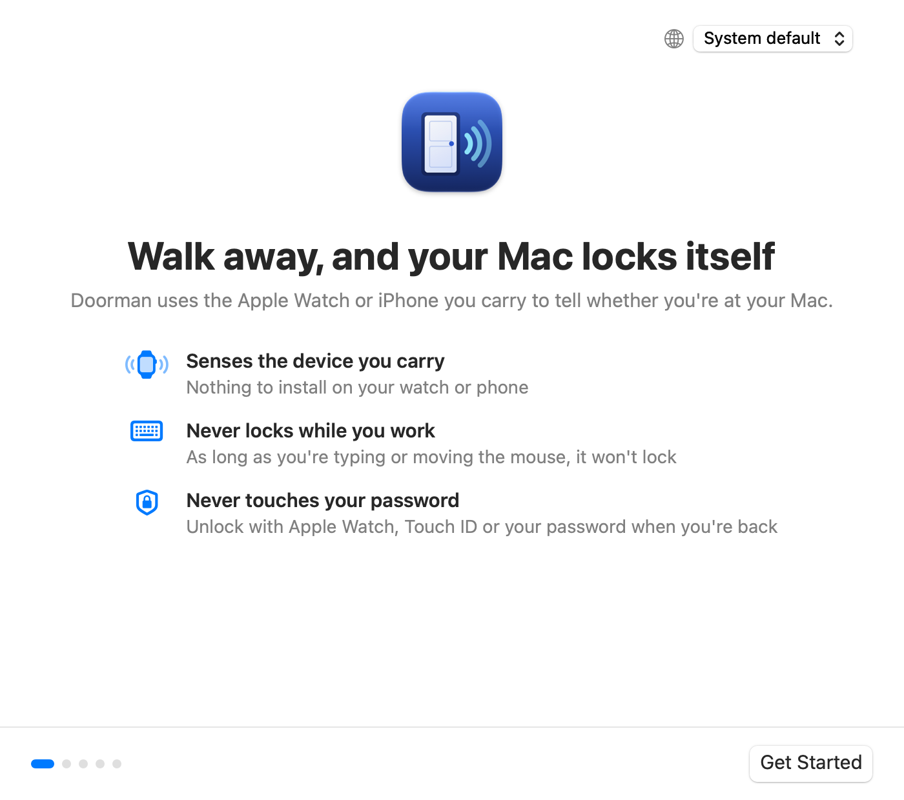
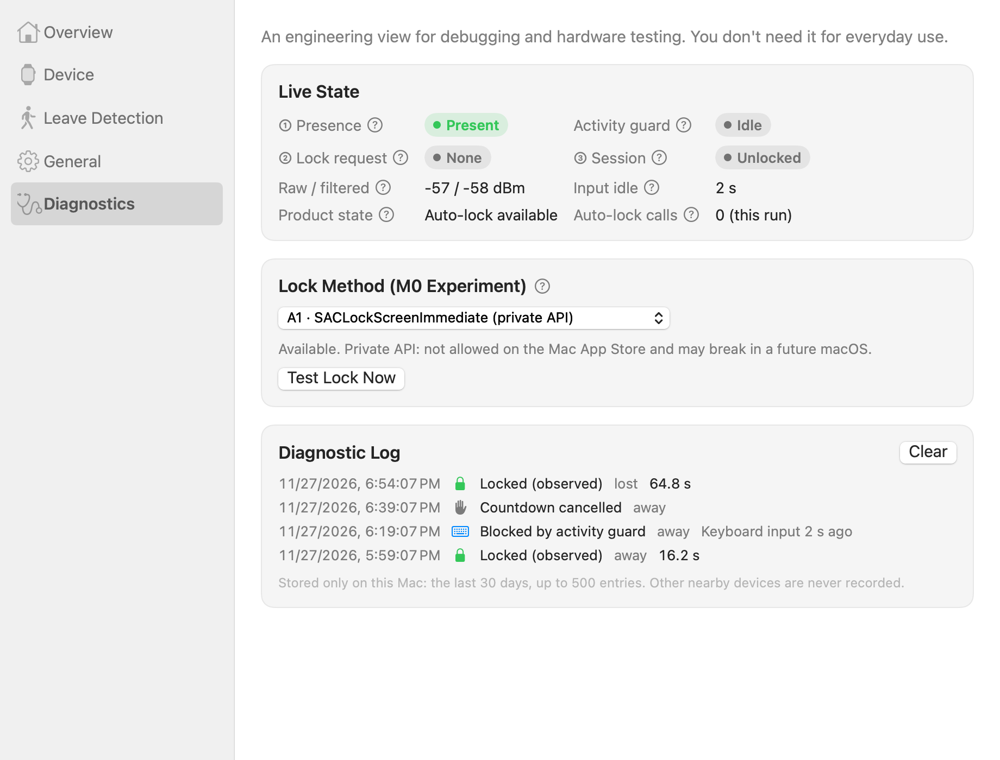

Walk away, and your Mac locks itself.
Doorman watches the Bluetooth signal of the Apple Watch or iPhone you carry. Leave your desk and the Mac locks; keep typing and it never will. Unlocking stays with macOS — your password is never stored or typed.

Built around one rule: never lock while you're working
Bluetooth signal alone is noisy. Doorman treats it as a hint and lets your keyboard and mouse have the final say.
Locks when you leave
Uses the Apple Watch or iPhone you already carry. Nothing to install on the watch or phone.
Never locks while you work
Recent keyboard, mouse or trackpad activity vetoes auto-lock. Idle time is checked again right before the lock call.
A countdown you can cancel
A 5-second countdown appears before locking. Move the mouse or press any key and it's gone.
Your password stays yours
Come back and unlock with Apple Watch, Touch ID or your password. Doorman only locks.
See the signal, pick a preset
A live two-minute chart and three presets — Sensitive, Balanced, Relaxed — instead of raw dBm values.
Honest status
The menu bar always says whether auto-lock is available, remind-only or not ready — and how to fix it.
How it works
Four checks stand between "the signal dropped" and "the screen is locked".
Read the signal
Bluetooth readings are smoothed with a median filter. Two thresholds with a gap between them stop flapping at the boundary.
Decide you left
The signal must stay below the "away" line for a few seconds, or disappear for 60 seconds.
Check you're idle
Keyboard and mouse must be idle for 10 seconds, then a 5-second countdown runs. Any input cancels this round.
Lock and confirm
Idle time is re-read right before locking. After locking, Doorman confirms the screen is actually locked.
A quiet menu bar app
Everything you need sits in the menu bar. Settings are there when you want to look closer.






Privacy and security
Doorman is designed so that the worst it can do is lock your screen.
- ✓Only locks, never unlocksBluetooth signal can be spoofed, so it is never used to unlock.
- ✓No password storedDoorman never asks for, saves or types your login password.
- ✓No keystrokes recordedIt only reads how long the keyboard and mouse have been idle.
- ✓Everything stays on your MacDiagnostics are kept locally for 30 days, 500 entries at most. No network access.
Install
Doorman is not notarized yet. Build it from source — only the Xcode Command Line Tools are needed.
# 1. Get the code git clone https://github.com/hodgekou/doorman.git cd doorman # 2. Build, install to /Applications and launch scripts/install.sh
Requirements
- macOS 13 Ventura or later, Apple silicon or Intel
- A Mac with Bluetooth LE
- An Apple Watch or iPhone, ideally on the same Apple ID
The app is ad-hoc signed. If macOS blocks the first launch, right-click Doorman in Finder and choose Open. Allow Bluetooth (required) and Notifications (recommended).
FAQ
Will it lock while I'm reading without touching anything?
Only if your device's signal also drops. You'll see a 5-second countdown first; nudge the mouse to cancel, and Doorman won't ask again until your device is reliably back near you.
Why doesn't Doorman unlock my Mac when I come back?
Bluetooth signal strength is not proof of identity and can be spoofed. macOS's own Apple Watch Unlock is far more secure, so Doorman leaves unlocking to it.
Which device works best?
An Apple Watch: it's always on your wrist. An iPhone works too, but a phone left on the desk keeps the signal strong even after you leave.
Which languages does it support?
English, Simplified Chinese and Japanese. Doorman follows your system language by default, and you can switch any time under Settings › General — the change takes effect immediately.
Is it on the Mac App Store?
No. The default lock method uses a private macOS function, which the App Store doesn't allow. Signed and notarized releases are on the roadmap.